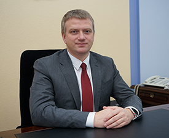

Лузгин Андрей Вячеславович Биография
Лузгин Андрей Вячеславович родился в городе Пензе 16 января 1981 года.
В 2002 году окончил Пензенскую государственную сельскохозяйственную академию по специальности «Экономика и управление аграрным производством». Трудовую деятельность начал в коммерческой сфере – в 2000 году работал менеджером ООО «РОСАРМ», в 2001 году был назначен заместителем директора данной компании. В период с 2003 по 2004 годы занимал должности ведущего экономиста, и.о. начальника экономического отдела ООО «Антарес-СМ». С 2004 по 2010 годы прошел путь от специалиста по финансам до директора по развитию магазина «Мир техники GSM»(ИП Родин В.Ю.). Затем в течение трех лет был коммерческим директором ООО «Дом».
2014 – 2015 годы – операционный директор ООО «Сбытторг», руководитель проектов, а затем директор по развитию и коммерции ООО «Управляющая компания «Новые технологии общественного питания» Русский Аппетит». В 2015 году Андрей Вячеславович был назначен на должность министра инвестиционного развития и внешнеэкономической деятельности Пензенской области, а также временно исполняющим обязанности заместителя председателя Правительства Пензенской области. С 2016 года – заместитель председателя Правительства Пензенской области, курировал разработку государственных программ региона, координировал реализацию программ социально-экономического развития региона. 25 октября 2019 года назначен на должность главы администрации города Пензы. Женат, воспитывает сына.